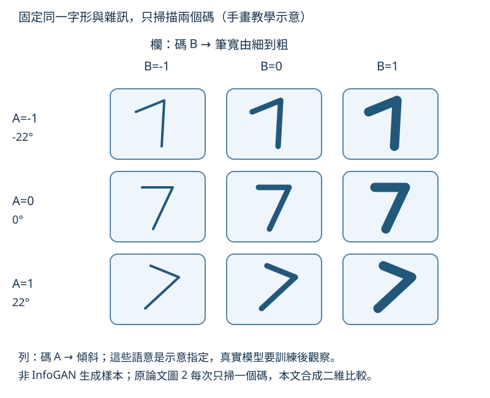
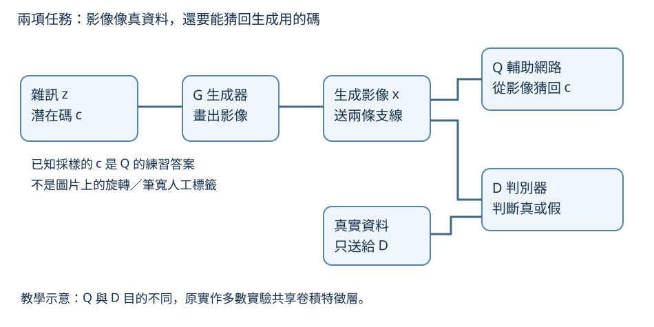
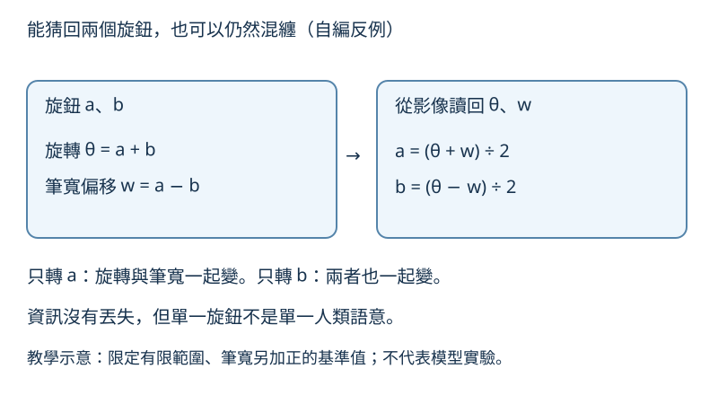

想像一台會畫手寫數字的機器，附著幾個沒有標籤的旋鈕。你希望一個旋鈕控制傾斜，另一個控制筆寬。InfoGAN 的做法是要求：看完畫出的圖，另一個網路應能猜回旋鈕的位置。但旋鈕的意義不是事先寫好的，也不保證每次都這麼整齊。
先看九個手畫的 7
下圖固定同一字形和雜訊，沿列改碼 A，沿欄改碼 B。示意中 A 改傾角，B 改筆寬。先只看中間一欄：往下走時，筆畫是否保持相同粗細？再沿中間一列看，傾角是否保持不變？
這個任務教你用掃描碼值檢查控制效果。圖是手畫的理想教學示意，不是模型輸出，也不是原論文生成樣本。真實 InfoGAN 並未收到「A 是旋轉、B 是筆寬」的標籤；研究者在訓練後改碼、看圖，才為變化命名。
同一數字的二維碼掃描

放大閱讀圖解 ↗ · 窄螢幕可在圖內左右滑動。

圖解文字說明
- 固定字形和雜訊
九格都是手畫的同一數字 7，不是模型結果。
- 沿列改 A
由上到下 A=-1、0、1，傾角依次為 -22°、0°、22°；同欄筆寬固定。
- 沿欄改 B
由左到右 B=-1、0、1，筆畫由細到粗；同列傾角固定。
- 比較方法
先只看中間一欄檢查旋轉，再只看中間一列檢查粗細；真實模型的碼語意要訓練後觀察。
三個網路，各自做什麼？
GAN 是生成對抗網路。生成器 G 把隨機輸入變成影像，判別器 D 練習分辨真實資料和生成影像；G 則練習讓作品更像資料。只做這件事，G 可以完全忽略某個輸入旋鈕。
InfoGAN 把輸入分成雜訊 z 與潛在碼 c。潛在碼就是希望承載可控制變化的一小組數字；雜訊保留其他變化。輔助網路 Q 看生成影像，猜回當初抽到的 c。
為什麼加 Q？因為它提供一個可訓練的回猜目標，鼓勵 G 不要丟掉 c 的資訊。Q 的答案來自生成時已知的碼，不是人工替真實圖片標註的旋轉或筆寬。D 判真偽，Q 猜碼，兩項任務必須分清楚。
G、Q、D 的兩項任務

放大閱讀圖解 ↗ · 窄螢幕可在圖內左右滑動。

圖解文字說明
- 生成支線
雜訊 z 與潛在碼 c 輸入 G，產生影像 x。
- 回猜支線
生成影像送 Q 猜回 c；答案是生成時已知的採樣碼，不是人工標註的旋轉或筆寬。
- 真偽支線
生成影像與真實影像都送 D 判真偽；真實影像沒有送入這張圖的 Q 支線。
- 共享特徵層
Q 與 D 目的不同；原實作多數實驗讓兩者共享卷積特徵層。
互資訊：看圖後，還剩多少猜測？
互資訊衡量「看見影像後，對碼的不確定性減少多少」。若改碼卻不改圖，影像不能幫助回猜；若圖中留下可辨識的差異，回猜就比較容易。
但容易回猜，不代表每個碼都對應人類喜歡的單一概念。下圖的自編反例讓兩個旋鈕同時影響旋轉和筆寬，仍然能從兩項變化算回原碼。資訊保留與語意解耦，是不同要求。
回猜成功仍可混纏

放大閱讀圖解 ↗ · 窄螢幕可在圖內左右滑動。

圖解文字說明
- 正向混合
在有限範圍內，旋轉 θ=a+b，筆寬偏移 w=a−b；實際筆寬另加足夠大的正基準值。
- 仍能逆算
從 θ 與 w 回猜 a=(θ+w)÷2、b=(θ−w)÷2。
- 為什麼仍混纏
只改 a 或只改 b，都同時影響旋轉與筆寬；可回猜不保證一個碼只對應一個人類語意。
- 證據邊界
這是自編可逆混合反例，不是原論文模型實驗或因果證據。
自己算一次混纏旋鈕
以下只是有限範圍內的自編反例。令旋轉 θ=a+b，筆寬偏移 w=a−b，實際筆寬另加足夠大的正基準值。a=1、b=0 時，θ=1、w=1；只把 a 改成 2，兩項都變成 2。
看到 θ=2、w=2，仍可用 a=(θ+w)÷2=2、b=(θ−w)÷2=0 回猜。這說明回猜成功不能單獨證明「一個碼只管一個概念」，更不能證明因果關係或唯一正確的表徵。
如何知道旋鈕真的分開了？
本文建議固定雜訊與其他碼，只掃一個碼，記錄所有看得到的變化；再換幾個字形與雜訊，檢查控制是否仍相似。若傾角與筆寬一起變，就不要急著叫它純旋轉碼。這是觀察練習，不是作者新增的實驗。
資料中的傾斜、字形、粗細可能相關。改潛在碼是在模型內操作，沒有介入真實書寫機制，因此整齊的變化不等於因果證據。
碼的正負和排列也沒有天然意義。兩次訓練可能用不同方向代表左傾；整組碼能回猜，也不足以唯一指定哪個座標必須叫旋轉。這是目標能力邊界的分析，不是原文的識別性保證。
熵、KL 與可訓練的下界
熵 H(c) 表示碼原先的不確定性，條件熵 H(c|x) 表示看到圖後剩餘的不確定性。互資訊是兩者的差。連續碼涉及微分熵，不能直接把離散碼的上界說法套過去。
真實的碼後驗分布 P(c|x) 難以取得，因此原文 §5 引入 Q(c|x) 近似。KL 散度衡量兩分布差異且非負；移除該項得到互資訊的變分下界，也就是可計算的保守目標。
官方 PDF 式 (5)：L_I=生成時已知碼與影像上的平均 log Q(c|x)+H(c)，且 L_I≤I(c;G(z,c))。固定先驗時 H(c) 是常數，訓練便能提高 Q 對正確碼的評分。
式 (6) 同時保留 GAN 對抗目標，並以 λ 權衡下界。提高下界不等於直接知道真實互資訊，也不保證人類語意解耦。Q 越接近真後驗，下界才越緊。
原文觀察到什麼，又如何選圖？
官方 PDF §7.2、圖 2：MNIST 設定為一個十類離散碼與兩個均勻連續碼；作者觀察到數字類別、旋轉與寬度的變化。碼的數量、型別與先驗由人選，語意則是事後觀察，無標籤不等於無先驗。
§7.2 報告約 5% 的 MNIST 分類誤差，是先把碼類別對應到數字類型後的結果，並非碼編號天然就是數字標籤。原文圖 2 也可看到混淆例子，不能說完美分類。
圖 3、圖 4 的人臉與椅子展示，對每個因子從五次隨機執行中挑最像既有監督結果的表徵。這是展示發現的證據，也有選圖限制，不能當成每次訓練穩定重現的保證。
§6 說多數實驗中 Q 與 D 共享卷積層，作者認為新增成本很小。這是該設計的觀察，不代表任意架構免費，也不是消除 GAN 訓練不穩的通用保證。
現在可以相信到哪裡？
你可以把 InfoGAN 看成：用回猜碼的要求，鼓勵生成器留下可控制的資訊，再用掃描碼值觀察表徵。本文手畫網格只是教你怎麼檢查，不能用來證明模型已學會。
研究者仍決定碼的數量、型別、分布、網路與目標權重；資料中的相關性也會影響學到的方向。解耦的圖像示例不能單獨建立因果關係、唯一識別，或保證所有訓練都找到人類語意。
原文閱讀路線與本庫筆記
先讀官方 PDF 圖 2 及 §7.2，理解固定其他輸入、只改一個碼的觀察方式；再回 §3 看 GAN、§4 看互資訊動機、§5 看式 (4)–(6)、§6 看實作。最後看圖 3、圖 4 的選圖說明。
本庫精要翻譯把章節重新整理，譯文 §3 與 §5 分別是方法與實驗；引用公式與圖號時，應以官方 PDF 的 §4–§7 為準。下方提供本庫摘要及精要翻譯，並標明它們不是官方全文。
原文與來源
此頁依下列固定快照編寫；教學例子與程式片段用來解釋方法，請回到原文確認研究設定與結果。
- arXiv 原始論文 1606.03657 ↗（公開）
- 原庫專屬導讀／閱讀筆記 ↗（私有庫，需要 GitHub 存取權；快照 6c07331）
- 官方原論文 PDF：§3–§7 與圖 1–4 ↗
- 官方摘要與版本資料 ↗
- 本庫摘要（精要筆記） ↗
- 本庫精要翻譯（非官方全文） ↗